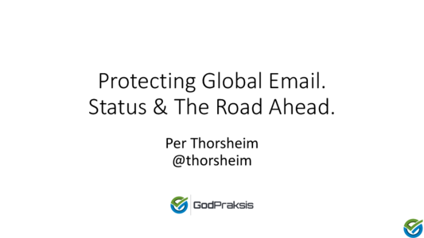
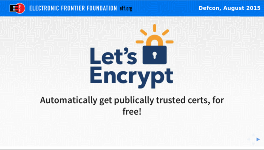
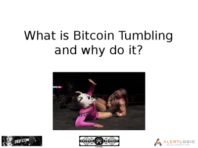
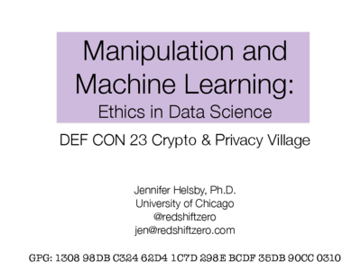
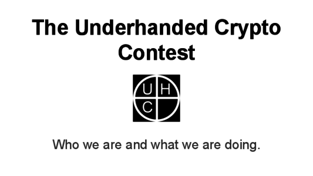
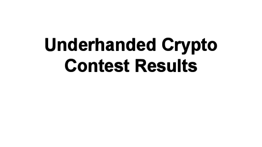

DEF CON 23 Archive
2015
Puzzle
Talks
Handouts
Schedule
The Puzzle
The Gold Bug
GitHub
The Talks

Protecting Global Email. Status & The Road Ahead. - Per Thorsheim

Let's talk about Let's Encrypt - Bill Budington

What is Bitcoin Tumbling and why do it? - Sean Thomas Jones

Manipulation and Machine Learning: Ethics in Data Science - Jennifer Helsby (@redshiftzero)

The Underhanded Crypto Contest - Adam Caudill (@adamcaudill)

Underhanded Crypto Contest Results - Adam Caudill (@adamcaudill)
Handouts
How do I Tails? (Windows, 8.5x11 handout)
How do I Tails? (Mac, 8.5x11 handout)
How do I Tails? (Linux, 8.5x11 handout)
How do I Tails? (slides)
Schedule
Crypto & Privacy Village Track (Bronze 3)
Time
Friday (8/7)
Saturday (8/8)
Sunday (8/9)
9:45
SETUP
SETUP
10:00
"DNS and the Future of Authenticity" - indolering
"Should we trust crypto frameworks? A story about CVE-2015-2141" - Anton Karpov
10:30
"Getting In to the Trust Store we Trust" - Ajit Hatti
"Where are the privacy-preserving services for the masses?" - Hadi Asghari
11:00
"Using Privacy and Crypto Tools" - Edmond Rogers (bigezy) & Shane Rogers (bust3r)
"Skip, Freak, and Logjam: Moving past a legacy of weakness in TLS" - Karthikeyan Bhargavan
11:30
"Peerio: Productivity with end-to-end encryption" - Nadim Kobeissi
12:00
Keynote: Crypto & Privacy Village
"What is Bitcoin Tumbling and why do it?" - Sean Thomas Jones
12:30
Keynote: Underhanded Crypto Contest - Adam Caudill & Taylor Hornby
"The design and implementation of a white-listed, end to end encrypted status application" - David Dahl
13:00
"Life of PII: A Day in the Life of Your Personally Identifiable Information" - Alisha Kloc
"Death of Privacy" - Stealth
13:30
14:00
"Opening Backdoors: The Importance of Backdoor Research" - Adam Caudill
"CrypTag: Building Encrypted, Taggable, Searchable Zero-knowledge Systems" - Steven Phillips
14:30
"How to Engineer a Cryptographic 'Front Door'" - Karl Koscher
"Making Email Dark" - Ladar Levison & Fred Nixon
15:00
"Let's Talk about Let's Encrypt" - Bill Budington
"STD's are the least of your worries when Cyber Cancer Prognosis is imminent" - Chris Brown (BigBiz)
15:30
16:00
"Machine Learning and Manipulation" - Jennifer Helsby (redshiftzero)
"Protecting global email - status & the road ahead" - Per Thorsheim
16:30
"Beginner Crypto for Application Developers" - Justin Engler
"Engineering Responsible Data Governance - A Privacy by Design Primer" - Steven F. Fox
17:00
"Breaking RSA - new cryptography for a post-quantum world" - Jennifer Katherine Fernick
Underhanded Crypto Contest Wrapup - Adam Caudill & Taylor Hornby
17:30
OPEN MIC/Key Signing Party
OPEN MIC/Key Signing Party
18:00
18:15-19:00
Party Time! (aka Closing Time)
Party Time! (aka Closing Time)
Workshop (Bronze 3)
Time
Friday (8/7)
Saturday (8/8)
Sunday (8/9)
11:00
"How Do I Tails? A Beginner's Guide to Anonymous Computing" - Forrest (Forbo)
11:30
Village Track (Bronze 4)
Time
Friday (8/7)
Saturday (8/8)
Sunday (8/9)
11:00
"Modern Crypto: 15 Years of Advancement in Cryptography" - Steve Weis
"Breaking CBC, or Randomness Never Was Happiness" - Dr. Albert H. Carlson (ECCSmith) & Patrick Doherty
11:30
13:00
"Hacking Quantum Cryptography" - Marina (bt3)`
13:30
16:00
"CFSSL: the evolution of a PKI toolkit" - Nick Sullivan
16:30
"IMSI Catcher Counter-Surveillance" - Freddy Martinez
18:00
"Teaching Privacy Using Red Team Strategies: An Undergraduate General Education Curriculum" - Robert Olson (nerdprof)
18:30